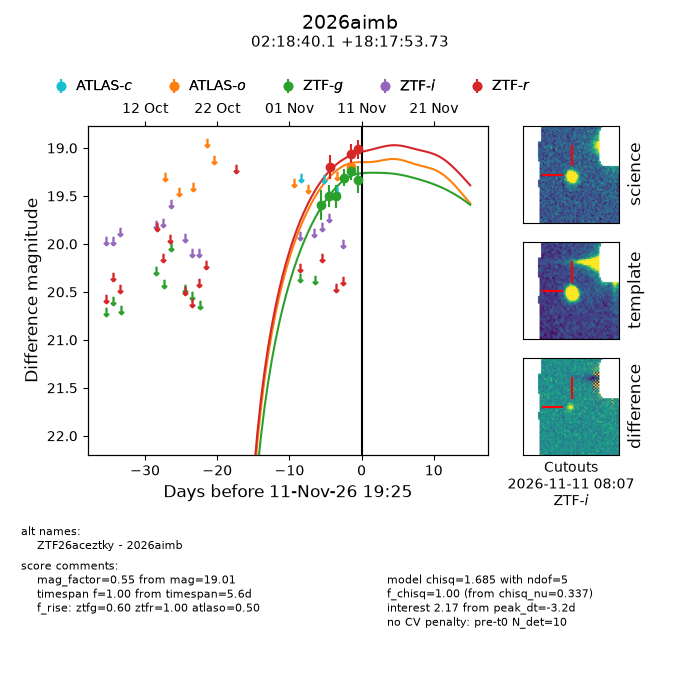
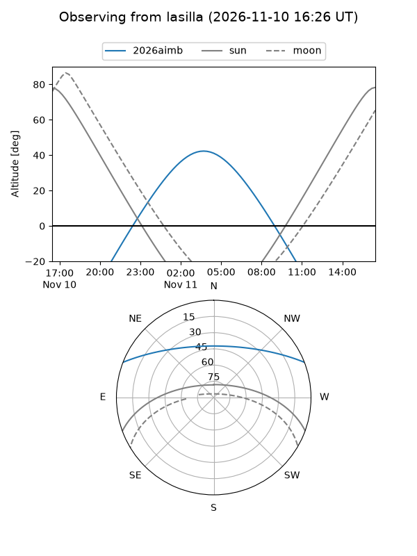
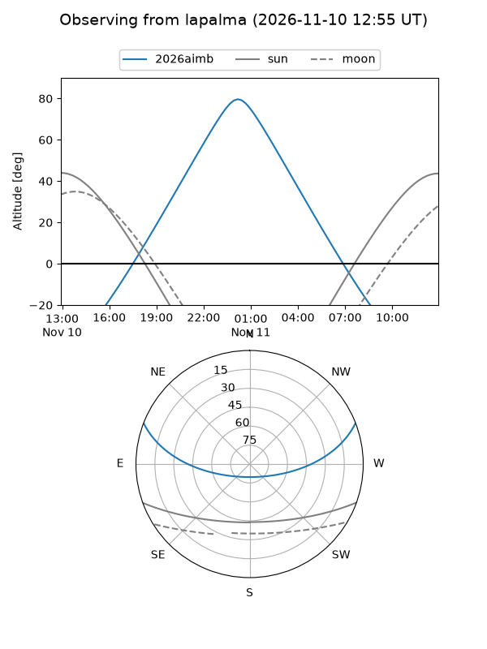
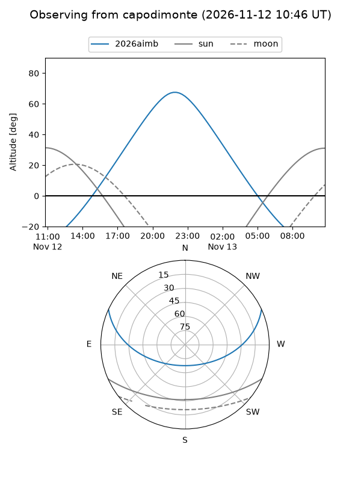
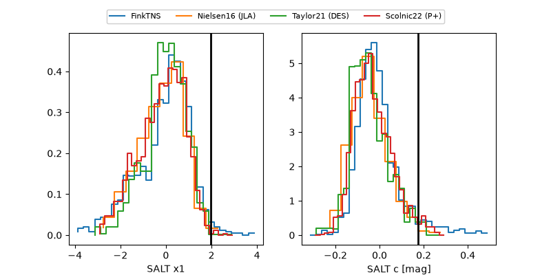

2026aimb
Target 2026aimb at 2026-11-11 19:27
Aliases and brokers:
FINK-ZTF: ztf.fink-portal.org/ZTF26aceztky
Lasair-ZTF: lasair-ztf.lsst.ac.uk/objects/ZTF26aceztky
ALeRCE-ZTF: alerce.online/object/ZTF26aceztky
YSE-PZ: ziggy.ucolick.org/yse/transient_detail/2026aimb
TNS name: wis-tns.org/object/2026aimb
Direct TNS query: direct search
alt names
ZTF26aceztky (ztf,fink_ztf)
2026aimb (tns,yse)
Coordinates:
equatorial (ra, dec) = 34.6672,+18.29826
equatorial (HMS+DMS) = 02:18:40.12,+18:17:53.73
galactic (l, b) = (150.3001,-39.89277)
Flags:
peak dt: -3.2
Photometry:
last atlaso=19.20, ztfg=19.33, ztfr=19.01
1 atlaso, 6 ztfg, 3 ztfr detections
Lightcurve

Visibility



Additional plots
